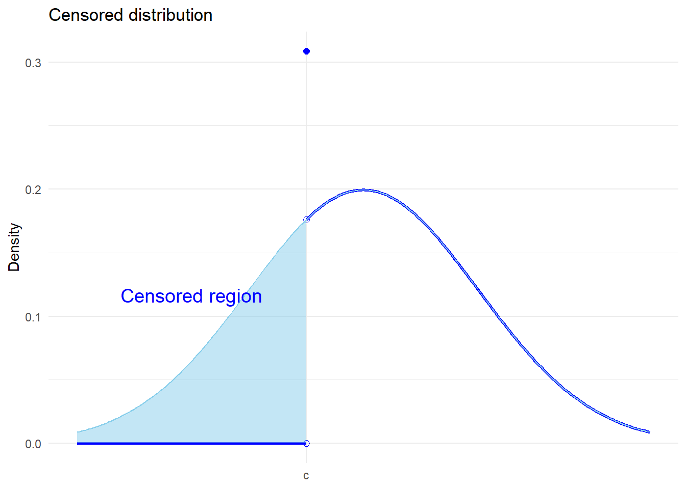
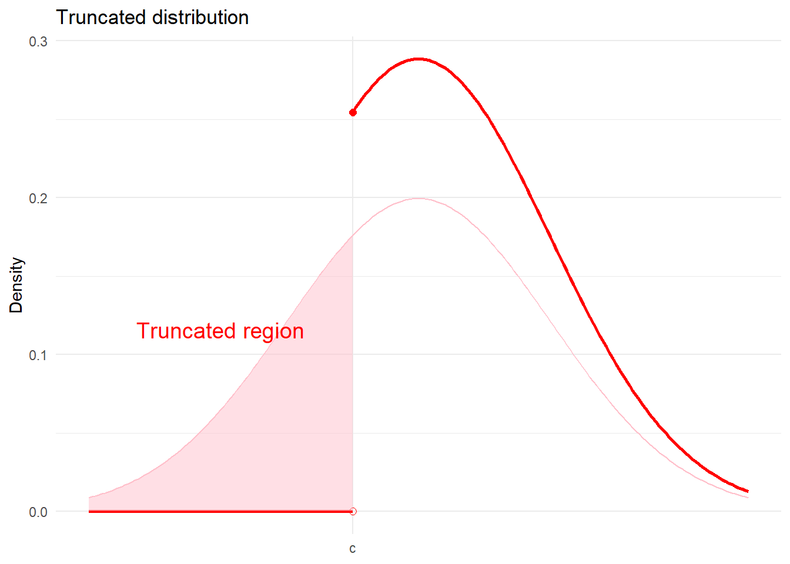

Code
library(ggplot2)
library(latex2exp)In this handout we will review models that allow us to relax two important assumptions
random sampling in the cross-section dimension;
and unrestricted values of the dependent variable.
In doing so, we will discuss two types of distributions:
truncated distribution
censored distribution
Further reading can be found in:
In the case of censored data, there is some loss of information for the dependent variable but the explanatory variables are still observed. A common-case of censored data is top-coded income data in surveys; i.e. “Income great than $100,000”.
In the extreme, you can think of a discrete-choice binary data as censored, since we don’t observe the latent variable.
The following is an example of a left-censored distribution. For individuals with values of the outcome \(Y<c\), we only observe the threshold \(c\). The distribution is given by,
\[ f(y) = \begin{cases} 0 \qquad \text{for} \quad y <c \\ F^*(c) \qquad \text{for} \quad y=c \\ f^*(y) \qquad \text{for} \quad y>c \end{cases} \]
# Threshold
sd <- 2
c <- -1
# Define the censored normal density function: x > c
x1 <- seq(from=c, to=5, by = 0.05)
cens_data <- data.frame(x=x1, pdf = dnorm(x1,sd=sd))
# Define the uncensored normal density function
x2 <- seq(from=-5, to=5, by = 0.05)
dens_data <- data.frame(x=x2, pdf = dnorm(x2,sd=sd))
# Generate data for shading the area under the curve for x<=c
x3 <- seq(-5, c, by = 0.05)
shade_data <- data.frame(x =x3 ,ymin = 0,ymax = dnorm(x3,sd=sd))
# Plot
ggplot() +
geom_line(data = cens_data, aes(x=x,y=pdf), color = "blue", linewidth = 1) +
geom_line(data = shade_data, aes(x=x, y=ymin), color = "blue", linewidth = 1) +
geom_point(aes(x = c, y = 0), color = "blue", size = 2, shape=1) +
geom_point(aes(x = c, y = dnorm(c,sd=sd)), color = "blue", size = 2,shape=1) +
geom_point(aes(x = c, y = pnorm(c,sd=sd)), color = "blue", size = 2) +
geom_line(data = dens_data, aes(x=x,y=pdf), color = "skyblue", linewidth = 0.5) +
geom_ribbon(data = shade_data, aes(x = x, ymin = ymin, ymax = ymax), fill = "skyblue", alpha = 0.5) +
labs(
title = TeX("Censored distribution"),
x = NULL,
y = "Density"
) +
scale_x_continuous(
breaks = c(c),
labels = c("c")
) +
theme_minimal() +
coord_cartesian(xlim = c(-5, 5)) +
annotate("text", x = c*3, y = 0.1, label = "Censored region", vjust = -1, hjust = 0.5, size = 5, color = "blue")
In truncated samples, both the dependent and explanatory variables are missing for some observations where he outcome value is one side of a threshold. For example, you might only observe the test score (and characteristics) of students who passed the test.
Another famous example is the labour market: we only observe the wages of those who are employed. Consider a consider where workers are observed working when they receive a wage offer that is as least as good as their reservation wage. According to such a model, those who are not employed must have received wage offers less than their reservation wage. It suggests, that the distribution of accepted wage offers will be truncated.
The following, is an example of a distribution that is left-truncated. We only observe values of \(Y\) for \(Y\geq c\). The density of a left-truncated random variable is,
\[ f(y) = f^*(y|y>c) = \frac{f^*(y)}{1-F^*(c)} \] where \(1-F^*(c) = Pr(y|y>c)\). In this way, truncation reduces the range of values the outcome variable can take. In this case, the mean of the truncated variable is greater than the unconditional mean.
# Threshold
sd <- 2
c <- -1
# Define the truncated normal density function: x > c
x1 <- seq(from=c, to=5, by = 0.05)
trun_data <- data.frame(x=x1, pdf = dnorm(x1,sd=sd)/(1-pnorm(c,sd=sd)))
# Define the untruncated normal density function
x2 <- seq(from=-5, to=5, by = 0.05)
dens_data <- data.frame(x=x2, pdf = dnorm(x2,sd=sd))
# Generate data for shading the area under the curve for x<=c
x3 <- seq(-5, c, by = 0.05)
shade_data <- data.frame(x =x3 ,ymin = 0,ymax = dnorm(x3,sd=sd))
# Plot
ggplot() +
geom_line(data = trun_data, aes(x=x,y=pdf), color = "red", linewidth = 1) +
geom_line(data = shade_data, aes(x=x, y=ymin), color = "red", linewidth = 1) +
geom_point(aes(x = c, y = 0), color = "red", size = 2, shape=1) +
geom_point(aes(x = c, y = dnorm(c,sd=sd)/(1-pnorm(c,sd=sd))), color = "red", size = 2) +
geom_line(data = dens_data, aes(x=x,y=pdf), color = "pink", linewidth = 0.5) +
geom_ribbon(data = shade_data, aes(x = x, ymin = ymin, ymax = ymax), fill = "pink", alpha = 0.5) +
labs(
title = TeX("Truncated distribution"),
x = NULL,
y = "Density"
) +
scale_x_continuous(
breaks = c(c),
labels = c("c")
) +
theme_minimal() +
coord_cartesian(xlim = c(-5, 5)) +
annotate("text", x = c*3, y = 0.1, label = "Truncated region", vjust = -1, hjust = 0.5, size = 5, color = "red")
Before we proceed, it is worth revising some useful traits of (joint) normal distributions.
We know that if \(X\sim N(\mu,\sigma^2)\), then \(Z = \frac{X-\mu}{\sigma}\sim N(0,1)\) (standard normal distribution). Moreover, as discussed in Handout 6, the pdf and cdf of the standard normal distribution are given by,
\[ \phi(z) = \frac{1}{\sqrt{2\pi}}exp(-z^2/2) \] and the CDF by, \[ \Phi(z) = \frac{1}{\sqrt{2\pi}}\int_{-\infty}^z exp(-u^2/2)du \]
The pdf of the \(X\) is given by,
\[ f_X(x) = \frac{1}{\sqrt{2\pi\sigma^2}}exp\bigg(-\frac{1}{2}\bigg(\frac{x-\mu}{\sigma}\bigg)^2\bigg) = \frac{1}{\sigma}\phi(z) \] and the cdf by, \[ F_X(x) = \Phi(z) \qquad \text{where}\quad z = \frac{x-\mu}{\sigma} \] We can evaluate the truncated mean of \(Z\sim N(0,1)\). First from the left:
\[ \begin{aligned} E[Z|Z>c] =& \int_{c}^{+\infty}z\frac{\phi(z)}{1-\Phi(c)}dz \\ =& \frac{1}{1-\Phi(c)}\int_{c}^{+\infty}z\phi(z)dz \\ =& \frac{1}{1-\Phi(c)}\int_{c}^{+\infty}-\phi'(z)dz \\ =& \frac{\phi(c)}{1-\Phi(c)} \end{aligned} \] Next from the left: \[ \begin{aligned} E[Z|Z<c] =& \int_{-\infty}^{c}z\frac{\phi(z)}{\Phi(c)}dz \\ =& \frac{1}{\Phi(c)}\int_{-\infty}^{c}z\phi(z)dz \\ =& \frac{1}{\Phi(c)}\int_{-\infty}^{c}-\phi'(z)dz \\ =& \frac{-\phi(c)}{\Phi(c)} \\ =&-E[Z|Z>-c] \end{aligned} \] where the last line is given by the symmetry of the standard normal distribution: \(\phi(c)=\phi(-c)\) and \(\Phi(c)=1-\Phi(-c)\). The function \(\frac{\phi(c)}{\Phi(c)} = E[Z|Z>-c]\) is referred to as the inverse mills ratio.
Let \(\begin{bmatrix}Y & X\end{bmatrix}'\) be joint normal:
\[ \begin{bmatrix}Y \\ X\end{bmatrix}\sim N\bigg(\begin{bmatrix}\mu_X \\ \mu_Y\end{bmatrix},\begin{bmatrix}\sigma^2_{Y} & \sigma_{YX} \\ \sigma_{XY} & \sigma^2_{X}\end{bmatrix}\bigg) \] where \(\sigma_{YX}=\sigma_{XY}\). Then,
\[ Y|X\sim N\bigg(\mu_Y + \frac{\sigma_{YX}}{\sigma_X^2}(X-\mu_X),\sigma^2_{Y}-\sigma_{YX}^2/\sigma^2_{X}\bigg) \] Note, the conditional mean of \(E[Y|X]=\mu_Y + \frac{\sigma_{YX}}{\sigma_X^2}(X-\mu_X)\) is a linear function of X.
Using the above result characteristic, we can show that if \(\begin{bmatrix}\varepsilon_i & \upsilon_i\end{bmatrix}'\) are jointly normal, with mean zero, then
\[ \begin{aligned} E[\varepsilon_i|\upsilon_i>-c] =& E\big[E[\varepsilon_i|\upsilon_i,\upsilon_i>-c]\big|\upsilon_i>-c\big] \\ =& E\bigg[\frac{\sigma_{\varepsilon\upsilon}}{\sigma_\upsilon^2}\upsilon_i\bigg|\upsilon_i>-c\bigg] \\ =&\frac{\sigma_{\varepsilon\upsilon}}{\sigma_\upsilon^2}E[\upsilon_i|\upsilon_i>-c] \\ =&\frac{\sigma_{\varepsilon\upsilon}}{\sigma_\upsilon^2}\sigma_\upsilon E\bigg[\frac{\upsilon_i}{\sigma_\upsilon}\bigg|\frac{\upsilon_i}{\sigma_\upsilon}>-\frac{c}{\sigma_\upsilon}\bigg] \\ =&\frac{\sigma_{\varepsilon\upsilon}}{\sigma_\upsilon}\frac{\phi(c/\sigma_\upsilon)}{\Phi(c/\sigma_\upsilon)} \\ =& \frac{\sigma_{\varepsilon\upsilon}}{\sigma_\upsilon}\lambda(c') \end{aligned} \] where \(c' = c/\sigma_\upsilon\). In models where \(\upsilon_i\) is the error from the selection equation, \(\sigma_\upsilon\) is not identified and must be normalized to 1. Thus, \(c' = c\).
In this section we will review a series of models that build on the latent variable model in Handout 6.
\[ Y_i^* = X_i'\beta + \varepsilon_i \] We want to learn about \(\beta\), but \(Y^*_i\) is only partially observed due to some selection process. We will first review the Tobit model, where the outcome is censored. For example, top-coded earnings data. Next, we will look at selection/threshold models, where the outcome is observed based on a selection decision. For example, non-response in a survey. Finally, will look at endogenous switching models, where you observe the outcome under different potential states, and a selection decision determines the state of observation. For example, wages earned in different sectors of the economy.
In all cases, the regressors (covariates) will be observed regardless of selection. This is important as we would otherwise not be able to identify the selection decision. Thus, we will not be able to evaluate truncated samples, where covariates are not observed when the outcome is not observed. For example, data on political donations.
In a Tobit model, the outcome is censored. You observe \(Y_i^*\) only above (or below) a given threshold \(c\), otherwise you observe the threshold value. However, you do observe the regressors (covariates) for all observations (regardless of censoring).
\[ Y_i = \begin{cases}Y_i^* \qquad \text{if} \quad D_i=1 \\ c \qquad \text{if} \quad D_i=0 \end{cases} \] where,
\[ D_i = \begin{cases}1 \qquad \text{if} \quad Y^*>c \\ 0 \qquad \text{if} \quad Y^*\leq c \end{cases} \] Given the latent variable model, you observe, \[ Y_i = \begin{cases}X_i'\beta + \varepsilon_i \qquad \text{if} \quad X_i'\beta + \varepsilon_i>c \\ c \qquad \text{if} \quad X_i'\beta + \varepsilon_i\leq c \end{cases} \] This is an example of left-censoring, but we could equally allow for right-censoring or both left- and right-censoring.
The conditional mean of the observed outcome (above the threshold) is given by:
\[ \begin{aligned} &E[Y_{i}|D_i=1,X_i] \\ =& E[Y_{i}^*|Y_i^*>c,X_i] \\ =&X_i'\beta + E[\varepsilon_{i}|\varepsilon_i>c-X_i'\beta,X_i] \end{aligned} \] A defining feature of the Tobit model is that observation, or selection, depends on the (latent) outcome \(Y^*\) alone. The following two selection models introduce a separate latent variable that determines selection.
The outcome \(Y^*\) is missing for some units, as in the case of truncated data. However, we do do observe the vector of characteristics \(X_i\) and \(Z_i\) (which may overlap) for all units. This is referred to as a selected sample. Note, some texts refer to the threshold model as the Heckman selection model, or Heckit for short.
Let \(D^*_i\) be a second continuous latent outcome, that determines observation/selection,
\[ D_i^* = Z_i'\gamma + \upsilon_i \] As in a binary choice model (see Handout 6), the observable dummy-variable, \(D_i\), which denotes selection into the observed sample, can be defined as,
\[ D_i = \begin{cases}1 \qquad \text{if} \quad D_i^*>0 \\ 0 \qquad \text{otherwise}\end{cases} \] For example, \(D_i\) may identify employment in a wage model where you only observe wages of employed individuals.
The observed outcome \(Y_i\) is then,
\[ Y_i = \begin{cases}Y_i^* \qquad \text{if} \quad D_i=1 \\ \text{missing} \qquad \text{otherwise} \end{cases} \] Given the latent variable models for \(Y_i^*\) and \(D_i^*\), this can be written as,
\[ Y_i = \begin{cases}X_i'\beta + \varepsilon_i \qquad \text{if} \quad Z_i'\gamma +\upsilon_i>0 \\ \text{missing} \qquad \text{otherwise} \end{cases} \]
The model has two error terms which means that we need to make an assumption about their joint distribution. If the two errors are independent, then we can ignore the missing observations; i.e., there is no selection bias.
Consider the conditional mean of the (observed) outcome:
\[ \begin{aligned} &E[Y_i|D_i=1,X_i] \\ =& E[Y_i^*|D_i=1,X_i] \\ =&X_i'\beta + E[\varepsilon_i|D_i^*>0,X_i] \\ =&X_i'\beta + E[\varepsilon_i|\upsilon_i>-Z_i'\gamma,X_i] \\ \end{aligned} \]
In general, \(E[\varepsilon_i|\upsilon_i>-Z_i'\gamma,X_i]\neq 0\). This means that the OLS estimator of,
\[ Y_i = X_i'\beta + \varepsilon_i \qquad \text{for}\quad i:D_i = 1 \]
is biased. However, if we know the (conditional) joint distribution of \(\begin{bmatrix}\varepsilon_i & \upsilon_i\end{bmatrix}'\) then we may be able to compute this bias and explicitly correct for it in the model. We will shortly see that the assumption of joint normality provides a relatively simple solution to the problem.
In the above model, selection (into observation of \(Y_i\)) was determined by a separate latent variable to the main outcome. As a result, the correlation between \(Y_i^*\) and \(D_i\) (or \(D_i^*\)) depended on the unobserved joint error-term distribution. In a stochastic threshold model, the selection depends directly on \(Y_i^*\). \[ Y_i = \begin{cases}Y_i^* \qquad \text{if} \quad Y_i^*>S_i^* \\ \text{missing} \qquad \text{otherwise} \end{cases} \] where, \[ S_i^* = W_i'\eta + \nu_i \] Thus, the indicator of observation is given by, \[ D_i = \begin{cases}1 \qquad \text{if} \quad Y_i^*>S_i^* \\ 0 \qquad \text{otherwise}\end{cases} \] Selection depends on the realization of \(\varepsilon_i\) and not just on \(Cov(\varepsilon_i,\upsilon_i)\) (where \(\upsilon_i\) is the error term from the selection equation in the non-stochastic model).
The observed \(Y_i\) is given by, \[ Y_i = \begin{cases}X_i'\beta + \varepsilon_i \qquad \text{if} \quad X_i'\beta + \varepsilon_i\geq W_i'\eta + \nu_i \\ \text{missing} \qquad \text{otherwise} \end{cases} \] As before, consider the conditional mean of the observed outcome: \[ \begin{aligned} &E[Y_i|D_i=1,X_i] \\ =& E[Y_i^*|D_i=1,X_i] \\ =&X_i'\beta + E[\varepsilon_i|D_i^*>0,X_i] \\ =&X_i'\beta + E[\varepsilon_i|(Y_i^*-S_i^*)>0,X_i] \\ =&X_i'\beta + E[\varepsilon_i|\upsilon_i>-Z_i'\gamma,X_i] \end{aligned} \] where, \[ \upsilon_i = \varepsilon_i-\nu_i \qquad \text{and}\qquad Z_i'\gamma = X_i'\beta - W_i'\eta \] This result shows that the two models - non-stochastic and stochastic threshold models - are equivalent. This equivalence will have implications for the interpretation of the parameters.
Consider, in the non-stochastic model, we have to consider \(Cov(\varepsilon_i,\upsilon_i)\). In the stochastic model, this is, \[ Cov(\varepsilon_i,\upsilon_i) = Cov(\varepsilon_i,\varepsilon_i-\nu_i) = Var(\varepsilon_i)-Cov(\varepsilon_i,\nu_i) \] If the \(Cov(\varepsilon_i,\nu_i)=0\) (i.e., no selection in the stochastic model), then \(Cov(\varepsilon_i,\upsilon_i)>0\).
The equivalence of these models also implies that \(Z_i\) must contain all variables in either \(X_i\) or \(W_i\). However, some variables in \(W_i\) need not appear in \(X_i\). There may be some variables in the selection equation that do not appear in the main equation. These are referred to as excluded variables.
In both threshold models, selection is determined by both observables (\(W_i\)) and unobservables (\(\upsilon_i\)). Other methods, like propensity score matching assume that selection is determined by observables alone. Instrumental variable approaches allow for selection on both, but do require an excluded instrument.
Consider a model where there are two latent outcomes \(\{Y_{1i}^*,Y_{2i}^*\}\):
\[ \begin{aligned} Y_{1i}^* =& X_i'\beta_1 + \varepsilon_{1i} \\ Y_{2i}^* =& X_i'\beta_2 + \varepsilon_{2i} \end{aligned} \]
For example, these could be wage equations from two sectors. Observation within either state is then determined by another latent variable \(D_i^*\):
\[ Y_i = \begin{cases}Y_{1i}^* \qquad \text{if} \quad D_i^*>0 \\ Y_{2i}^* \qquad \text{otherwise} \end{cases} \]
where,
\[ D_i^* = Z_i\gamma + \theta (Y_{1i}^*-Y_{2i}^*) + \zeta_i \] You could extent this to more than 2 states; but that makes modelling selection a little more complex. In this simple set-up, the observed outcome is given by, \[ Y_i = \begin{cases}X_i'\beta_1 + \varepsilon_{1i} \qquad \text{if} \quad Z_i\gamma + \theta (Y_{1i}^*-Y_{2i}^*) + \zeta_i>0 \\ X_i'\beta_2 + \varepsilon_{2i} \qquad \text{otherwise} \end{cases} \]
An important limitation within this model is the absence of any state-specific covariates in either the \(\{Y_{1i}^*,Y_{2i}^*\}\) latent models or \(D_i^*\) selection model. Selection can only depend on the difference in the latent outcomes.
For each individual, we only observe one of the outcomes, which is to say there is a “missing counterfactual”. This is a similar structure then to the potential outcomes framework discussed in Handout 8. Although, with important differences. Here, each covariate has a state-specific vector \(\beta_m\).
The conditional mean of the observed outcome in each state is given by:
\[ \begin{aligned} &E[Y_{1i}|D_i=1,X_i] \\ =& E[Y_{1i}^*|D_i=1,X_i] \\ =&X_i'\beta_1 + E[\varepsilon_{1i}|D_i^*>0,X_i] \\ =&X_i'\beta_1 + E[\varepsilon_{1i}|\zeta_i>-Z_i'\gamma-\theta (Y_{1i}^*-Y_{2i}^*),X_i] \end{aligned} \] for state 1, and for state 2: \[ \begin{aligned} &E[Y_{2i}|D_i=0,X_i] \\ =& E[Y_{2i}^*|D_i=0,X_i] \\ =&X_i'\beta_2 + E[\varepsilon_{2i}|D_i^*\leq0,X_i] \\ =&X_i'\beta_2 + E[\varepsilon_{2i}|\zeta_i\leq -Z_i'\gamma-\theta (Y_{1i}^*-Y_{2i}^*),X_i] \end{aligned} \]
The goal is to estimate the \(\beta\) parameters from the latent model under various observation mechanisms.
\[ Y_i^* = X_i^*\beta + \varepsilon_i \]
However, we can only ever use the observed outcome \(Y_i\) and \(D_i\) (indicator of selection/observation).
Recall, the conditional mean of the observed (non-censored) outcome variable. Applying the definition of the IMR, we have,
\[ \begin{aligned} E[Y_{i}|Y_i^*>c,X_i] =&X_i'\beta + E[\varepsilon_{i}|\varepsilon_i>c-X_i'\beta,X_i] \\ =&X_i'\beta + \sigma_\varepsilon E\bigg[\frac{\varepsilon_i}{\sigma_\varepsilon}\bigg|\frac{\varepsilon_i}{\sigma_\varepsilon}>\frac{c-X_i'\beta}{\sigma_\varepsilon},X_i\bigg] \\ =&X_i'\beta + \sigma_\varepsilon \lambda\bigg(\frac{X_i'\beta-c}{\sigma_\varepsilon}\bigg) \end{aligned} \] This equation can be estimated by OLS using a two-step estimator (see of Heckman correction below). However, the more efficient estimator is Maximum Likelihood. The joint likelihood is given by,
\[ \begin{aligned} L_n(\theta) =&\prod_{i:D_i=1}f^*(Y_i|X_i;\theta)\prod_{i:D_i=0}F^*(c_i|X_i;\theta) \\ =&\prod_{i=1}^n\bigg(\frac{1}{\sigma_\varepsilon}\phi\bigg(\frac{Y_i-X_i'\beta}{\sigma_\varepsilon}\bigg)\bigg)^{D_i}\Phi\bigg(\frac{c-X_i'\beta}{\sigma_\varepsilon}\bigg)^{1-D_i} \end{aligned} \] where \(\theta = [\beta,\sigma_\varepsilon]\) and \(F^*(c_i|X_i;\theta) = Pr(Y_i\leq c|X_i)\).
Notice, the first part of the likelihood function looks like the likelihood of the CLRM (from Handout 3) while the second part is similar to a probit model likelihood function for \(D_i=0\) (from Handout 6). One issue with the likelihood function is that it is not globally concave (see Tobit II model).
Heckman (1979) put forward a novel solution for the estimation of sample selection models. The approach adds a generated-regressor to the (linear) estimating equation that corrects for the endogenous selection. Conditional on observation, the error term in the observed model will not be mean zero. The approach is called a control function approach and means that the bias corrected model can be estimated using OLS and not ML (which was computationally demanding at the time).
Recall from the endogenous selection models (stochastic or non-stochatic), that the conditional mean of the observed outcome was,
\[ E[Y_i|D_i=1,X_i] = X_i'\beta + E[\varepsilon_i|\upsilon_i>-Z_i'\gamma,X_i] \] Suppose, \[ \begin{bmatrix}\varepsilon_i \\ \upsilon_i\end{bmatrix}|X_i\sim N\bigg(\begin{bmatrix}0 \\ 0\end{bmatrix},\begin{bmatrix}\sigma^2_{\varepsilon} & \sigma_{\varepsilon\upsilon} \\ \sigma_{\varepsilon\upsilon} & 1\end{bmatrix}\bigg) \] We need to normalize the variance of \(\upsilon_i\) as it is not identified. Recall, \(\upsilon_i\) is associated with the discrete outcome \(D_i\) that indicates observation. Just as in a probit model, the variance of the latent variable model error term is not identified.
Given, the joint normality assumption: \[ E[Y_i|D_i=1,X_i] = X_i'\beta + \sigma_{\varepsilon\upsilon}\lambda(Z_i'\gamma) \]
The Heckman two-step estimator estimates the adjusted model,
\[ Y_i = X_i'\beta + \sigma_{\varepsilon\upsilon}\hat{\lambda}_i + \varepsilon_i \qquad \text{for}\quad i:D_i = 1 \] where,
\[ \hat{\lambda}_i = \lambda(Z_i'\hat{\gamma}) = \frac{\phi(Z_i'\hat{\gamma})}{\Phi(Z_i'\hat{\gamma})} \]
Recall, if \(\sigma_{\varepsilon\upsilon}=0\) in the non-stochastic model, selection into observation is unrelated to the latent outcome. Hence, \(H_0:\sigma_{\varepsilon\upsilon}=0\) is a valid test for the selection, provided the model is non-stochastic.
Since the second step includes a generated-regressor, the default vairance estimator will be incorrect. This is standard problem with two-step estimators, like two-stage-least-squares for instrumental variables.
Identifcation relies on the non-linearity of the IMR. The IMR can be approximately linear for some values which means that the identification depends on there being a significant share of observations in the tail where the IMR is non-linear. In practice, many researchers will include squared terms of the IMR. Identification does NOT rely on an excluded variable: a variable in the selection equation that does not appear in the main equation. However, it will help to have an excluded variable.
Heckman’s control function approach removed the need to use a Maximum Likelihood. However, the ML estimator is more efficient. The joint likelihood is given by,
\[ \begin{aligned} L_n(\theta) =&\prod_{i:D_i=1}f^*(Y_i|D_i=1,Z_i;\theta)\cdot Pr(D_i=1|Z_i)\prod_{i:D_i=0}Pr(D_i=0|Z_i) \\ =& \prod_{i:D_i=1} f^*(Y_i|Z_i;\theta)\cdot Pr(D_i=1|Y_i,Z_i)\prod_{i:D_i=0}Pr(D_i=0|Z_i)\\ =&\prod_{i=1}^n\bigg[\frac{1}{\sigma_\varepsilon}\phi\bigg(\frac{Y_i-X_i'\beta}{\sigma_\varepsilon}\bigg)\cdot\Phi\bigg(\frac{Z_i'\gamma+\sigma_{\varepsilon\upsilon}\sigma_{\varepsilon}^{-2} (Y_i-X_i'\beta)}{\sqrt{1-\sigma_{\varepsilon\upsilon}^2\sigma_{\varepsilon}^{-2}}}\bigg)\bigg]^{D_i}(1-\Phi(Z_i'\gamma)\big)^{1-D_i} \end{aligned} \] where \(\theta=[\beta,\gamma,\sigma_\varepsilon,\sigma_{\varepsilon\upsilon}]\). Line two follows from Bayes’ rule. The second term in the third row derives from:
\[ \begin{aligned} Pr(D_i=1|Y_i,Z_i) =& Pr(\upsilon_i>-Z_i'\gamma|Y_i,Z_i) \\ =& Pr(\sigma_{\varepsilon\upsilon}/\sigma_{\varepsilon}^2\varepsilon_i+ \zeta_i >-Z_i'\gamma|Y_i,Z_i) \\ =& Pr(\zeta_i >-Z_i'\gamma-\sigma_{\varepsilon\upsilon}/\sigma_{\varepsilon}^2\varepsilon_i|Y_i,Z_i) \\ =& \Phi\bigg(\frac{Z_i'\gamma+\sigma_{\varepsilon\upsilon}\sigma_{\varepsilon}^{-2} (Y_i-X_i'\beta)}{\sqrt{1-\sigma_{\varepsilon\upsilon}^2\sigma_{\varepsilon}^{-2}}}\bigg) \end{aligned} \] This is because of the joint normality of the errors, which allows us to write,
\[ \upsilon_i = \sigma_{\varepsilon\upsilon}/\sigma_{\varepsilon}^2\varepsilon_i+ \zeta_i \qquad \text{where}\quad \zeta_i\sim N(0,1-\sigma^2_{\varepsilon\upsilon}/\sigma_{\varepsilon}^2) \] Conditional on \(Y_i^*\), \(\varepsilon_i\) is not random, which is why is moved to the right-handside and is substituted with \(\varepsilon_i=Y_i-X_i'\beta\).
Notice, if \(\sigma_{\varepsilon\upsilon}=0\), then likelihood of selection and observing \(Y_i\) are independent of one another.
In the non-stochastic threshold model, \(Cov(\varepsilon_i,\upsilon_i)=\sigma_{\varepsilon\upsilon}=0\) implies there is not selection-bias in the main equation. However, in the stochastic model \(\sigma_{\varepsilon\upsilon}>0\) cannot be zero; since \(\upsilon_i = \varepsilon_i-\nu_i\)
\[ Cov(\varepsilon_i,\upsilon_i) = Cov(\varepsilon_i,\varepsilon_i-\nu_i) = Var(\varepsilon_i)-Cov(\varepsilon_i,\nu_i) \] In the stochastic model, when there is no selection if \(Cov(\varepsilon_i,\nu_i)=0\). However, this implies that \(\sigma_{\varepsilon\upsilon}=\sigma_\varepsilon\). As a result,
\[ E[Y_i|D_i=1,X_i] = X_i'\beta + \sigma_{\varepsilon\upsilon}\lambda(Z_i'\gamma) = X'\beta + \sigma_\varepsilon\lambda(X_i'\beta) \]
The stochastic threshold model returns a Tobit model when there is no selection.
We have a puzzle! You cannot distinguish the stochastic and non-stochastic threshold models. The test for selection - \(H_0:\sigma_{\varepsilon\upsilon}=0\) - using the coefficient on the IMR is only valid under the non-stochastic case, since \(\sigma_{\varepsilon\upsilon}>0\) in the stochastic case. This means that if the stochastic model is valid, there is no test for selection. And if there is no selection, in the stochastic model, the model is essentially a tobit model.
This puzzle suggests that all three models are empirically indistinguishable. You need to make an economic argument for why one model is valid.
In the above models, any regressor affects expected value of the observed outcome through two potential channels: (1) the direct effect; (2) the selection effect.
Consider, there is the effect of \(X_i\) on the latent outcome:
\[ \frac{\partial E[Y_i^*|X_i]}{\partial X_i} = \beta \]
Then, there is the effect of \(Z_i\) (which includes \(X_i\), but also potential excluded variables) on selection (into observation):
\[ \frac{\partial Pr(D_i=1|Z_i)}{\partial Z_i} \]
Then, there is the effect of \(X_i\) conditional on selection (observation),
\[ \frac{\partial E[Y_i|X_i,D_i=1]}{\partial X_i} \] and the total effect of \(X_i\) on the observed outcome:
\[ \frac{\partial E[Y_i|X_i]}{\partial X_i} \]
We can use the Law of Iterated Expectations to expand the conditional mean of \(E[Y_i|X_i]\). Let where \(\omega_i= \frac{X_i'\beta-c}{\sigma_\varepsilon}\), then
\[ \begin{aligned} E[Y_i|X_i] =& E[Y_i|X_i,D_i=1]\cdot Pr(D_i=1|X_i)+E[Y_i|X_i,D_i=0]\cdot Pr(D_i=0|X_i) \\ =&E[Y_i|X_i,D_i=1]\cdot Pr(D_i=1|X_i) + c\cdot Pr(D_i=0|X_i) \\ =&\big[X_i'\beta + \sigma_\varepsilon \lambda(\omega_i)\big]\cdot \Phi(\omega_i)+c\cdot \big[1-\Phi(\omega_i)\big] \end{aligned} \] Recall, in this case \(Pr(D_i=1|X_i)=Pr(Y_i^*>c|X_i)\). Naturally, \(c=0\) simplifies the expression.
The relevant marginal effects are:
\[ \begin{aligned} \frac{\partial E[Y_i|D_i=1,X_i]}{\partial X_i} =& \big[1 + \lambda'(\omega_i)\big]\beta \\ =& \big[1 -\omega_i\cdot\lambda(\omega_i)-\lambda(\omega_i)^2\big]\beta \end{aligned} \] You can verify this result using the definition of the IMR.
\[ \frac{\partial Pr(Y_i=1|X_i)}{\partial X_i} = \phi(\omega_i)\beta/\sigma_\varepsilon \]
Let us assume that all \(X_i\) regressors are included in \(Z_i\), which we know should be the case given the observational equivalence of the stochastic and non-stochastic models. The above marginal effects for these selection models is given by,
conditional on selection: \[ \begin{aligned} \frac{\partial E[Y_i|D_i=1,Z_i]}{\partial X_i} =& \beta + \sigma_{\varepsilon\upsilon}\lambda'(Z_i'\gamma)\tilde{\gamma} \\ =&\beta -\sigma_{\varepsilon\upsilon}\big[Z_i'\gamma\cdot\lambda(Z_i'\gamma) + \lambda(Z_i'\gamma)^2\big]\tilde{\gamma} \end{aligned} \] where \(\tilde{\gamma}\) refers to the subset of \(\gamma\)-vector corresponding to the \(X_i\) regressors that appear in \(Z_i\). That is, it excludes the parameters on any excluded variables.
selection:
\[ \frac{\partial Pr(D_i=1|Z_i)}{\partial Z_i} = \phi(Z_i'\gamma)\gamma \]
Recall, in the threshold model the variance of the selection equation is not identified. Hence, the selection margin effect resembles that of a probit model. In the Tobit model, selection depends on the outcome itself and the variance can be identified from the part of the data where \(Y\) is observed.